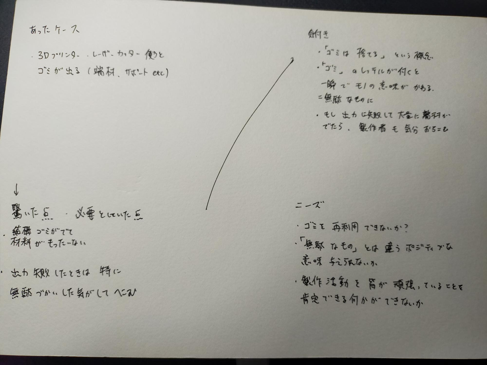
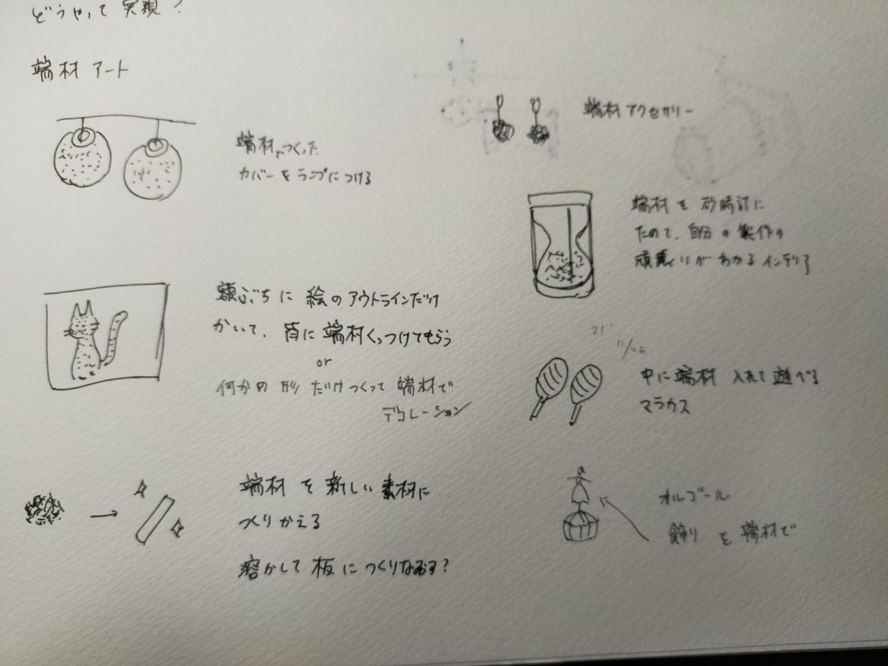
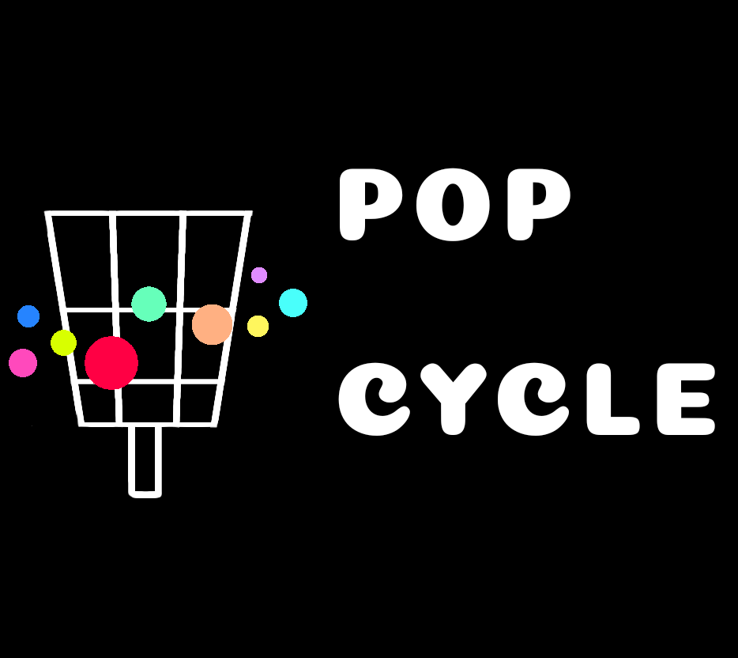
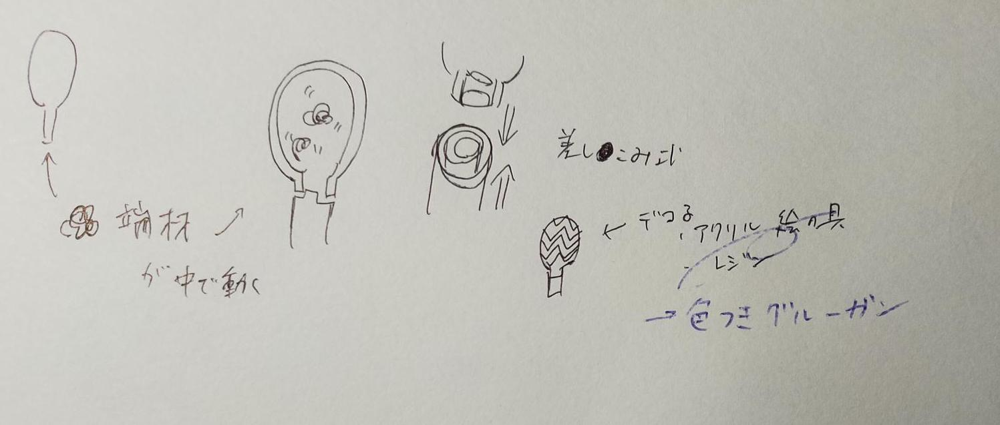
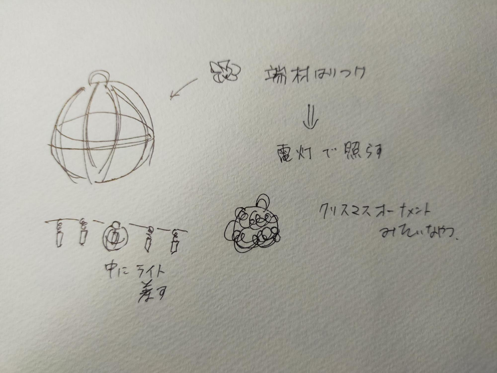
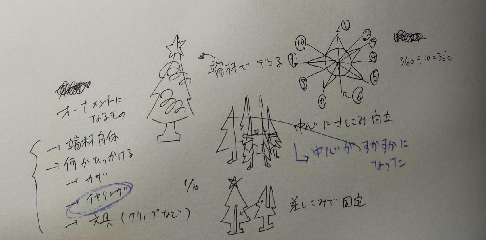
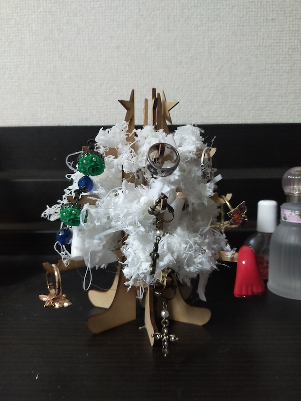
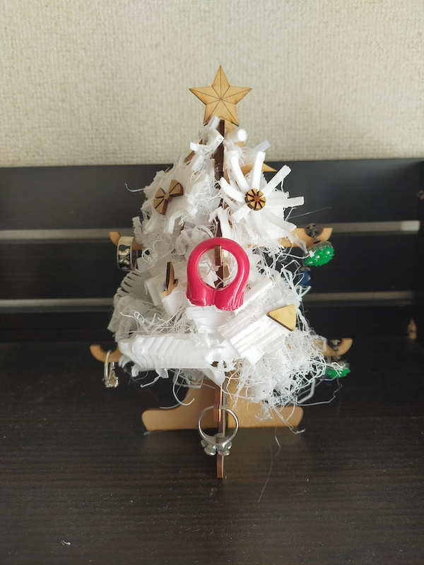
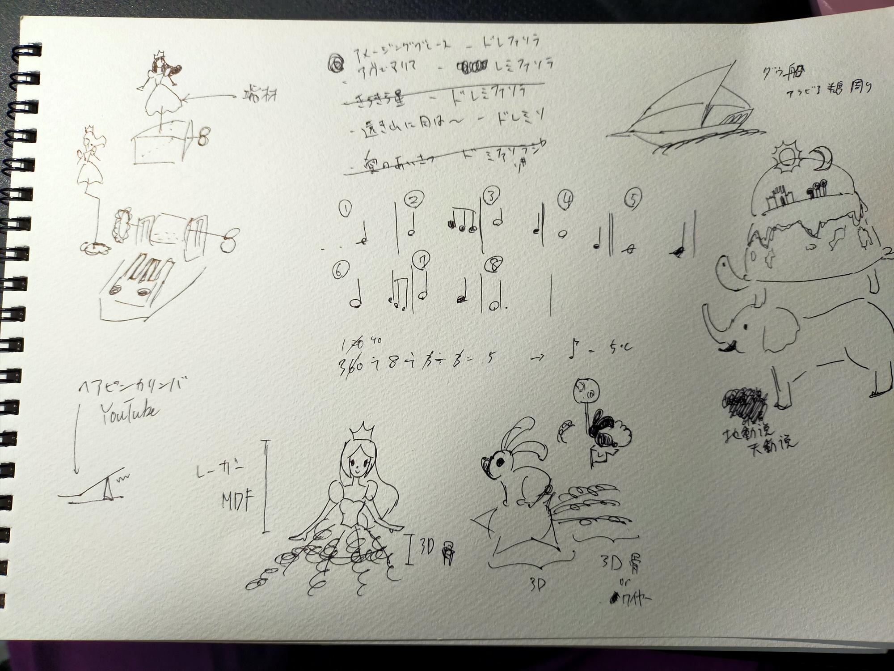

最終課題テーマ：デジファブにおける端材の再利用
（POPCYCLE シリーズ）
POPCYCLE シリーズとは
杉野が即席で考えた、デジファブから生まれる端材の再利用からなる製品群。

３Dプリンターやレーザーカッティングでは、製品出力の失敗や細かな造形の度にどうしても多くの端材が出てしまう。それをもったいないと感じていたことから当シリーズが誕生した。
シリーズ名は明るいものにしたい→ポップ？→
- アイスキャンディーの英語名"ポプシクル" "popsicle"
- 時流に乗っている様子="ポップ" "pop"
- 循環を表す"サイクル" "cycle"
を連想した駄洒落になっている。

ロゴのデザインは、欧米の公共ゴミ箱の形をアイスキャンディーになぞらえ、ポップなカラーのドットが周囲を円状に巡り循環を表す。
製品紹介１：マラカス
製品紹介２：ライトカバー
製品紹介３：ジュエリースタンド
製品紹介４：オルゴール
詳細
マラカス
メモ：

- 使ったもの：3Dプリンター（フィラメントはPLA)、グルーガン（ダイソー、合成樹脂、接着剤・マラカスのデコレーションとして）、PLA製端材
- データ：zipファイルはこちらから
ケースの中に端材を入れて振ると音が鳴る。本体と柄の取り付けは
篠原さんの本クラスのDesign for Others(リンク）からヒントを得る。
個人的には家で一人ミュージカルをするときに重宝。
ライトカバー
メモ：

- 使ったもの：3Dプリンター（フィラメントはPLA)、グルーガン（ダイソー、合成樹脂、接着剤として）、PLA製端材
- データ：zipファイルはこちらから
杉野のDesign for othersでPLAでライト（ミラーボール）を作ったことから、他のライトカバー作成を連想。
ちょうどクリスマス時期で、オーナメント的なものを作りたいと思った。
ジュエリースタンド
メモ：

- 使ったもの：レーザーカッティング（素材はMDFの2.5mm)、グルーガン（ダイソー、合成樹脂、接着剤として）、PLA製・MDF端材
- データ：DXFファイルはこちらから
置物でありながら、実用的なものが欲しいと思った。アクセサリーがクリスマスツリーのオーナメントと重なった。
当初、中心に切り込みを入れた円盤をおいて、それに木片を挟み込んでツリーにしようとしたが、各枝が離れてしまい、上部の星も綺麗に表現できなかったので、板と板同士の差し込みタイプに変更。
（左）旧ツリー （右）新ツリー

オルゴール
メモ：

- 使ったもの：3Dプリンター（フィラメントはPLA)、レーザーカッティング（素材はMDF 2.5mm)、グルーガン（ダイソー、合成樹脂、接着剤・デコレーションとして）、PLA製端材、アルミ針金（ダイソー、飾り部分）、かりんば（フライングタイガー、SALEで350円）
- 使用楽曲：アメージンググレイス
- データ：zipファイルはこちらから
杉野のDesign for othersのゼンマイ政策でオルゴールの構造を調べたことから、オルゴール作成＋飾り部分を端材で作れないかと思った。
当初、オルゴール部分もヘアピンで自作しようとしたが、音が綺麗に響かず断念。フライングタイガーで５音階のカリンバを購入し、自身で使用楽曲用にチューニングし直す。
飾り部分に関して、当初ドレスを着た女の子にしようとしたが、色々考えた結果、箱の四角から中世ヨーロッパの世界地図（天動説、地球は四角or平らだと思われていた）を連想し、その上を駆け抜ける船を飾りとした。
前の画面に戻る